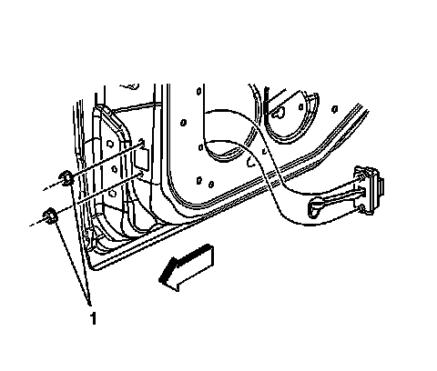

Rear Door Limiter: Service and Repair
Rear Side Door Check Link Replacement
Removal Procedure
1. Remove the door trim panel. Refer to Rear Side Door Trim Panel Replacement (Service and Repair) .
2. Pull the forward half of the water deflector away from the door panel in order to access the check link. Refer to Rear Side Door Water Deflector Replacement (Service and Repair) .

3. Remove the check link to hinge pillar bolts.
4. Remove the check link to door nuts (1).
5. Remove the check link from the door.
Installation Procedure
1. Install the check link into the door.
Notice: Refer to Fastener Notice (Fastener Notice) .
2. Install the check link to door nuts (1).
Tighten the nuts to 9 N.m (80 lb in).
3. Install the check link arm to the center pillar bolt.
Tighten the bolt to 9 N.m (80 lb in).
4. Install the water deflector. Refer to Rear Side Door Water Deflector Replacement (Service and Repair) .
5. Install the door trim panel. Refer to Rear Side Door Trim Panel Replacement (Service and Repair) .